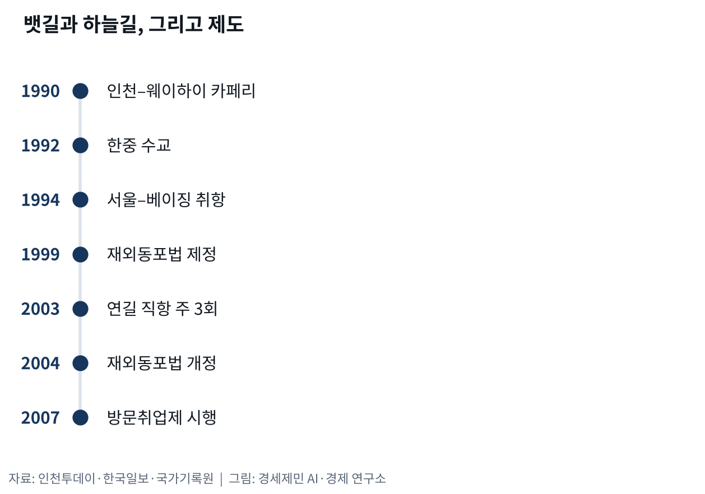
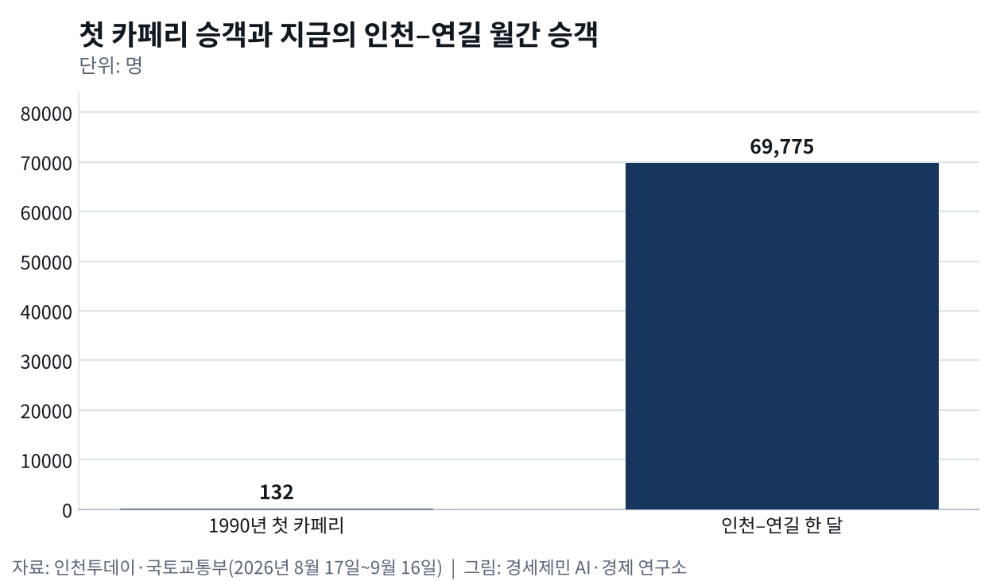

조선족과 인천-연변
- 인천항 뱃길이 먼저 열고 4년 뒤 하늘길이 따라붙었다
- 동포를 부른 제도가 동포를 단순노무에 묶어 둔 까닭
한국과 중국을 잇는 첫 여객 직항로는 하늘이 아니라 바다에 났다. 1990년 9월 15일 오후 5시 인천항에서 카페리 골든브릿지호가 승객 132명과 선원 34명을 태우고 웨이하이로 떠나 17시간 만에 닿았다. 수교 2년 전이었고, 1949년 이후 끊겼던 서해 뱃길이 41년 만에 다시 이어진 것이다(인천투데이).
배가 먼저 열고 비행기가 뒤따랐다
배가 길을 낸 자리에 비행기는 4년 뒤에야 들어섰다. 1992년 수교 뒤 대한항공은 1994년 12월 9일 중국 쪽과 정기항로 개설 상무협정을 맺었다. 그 협정에 따라 대한항공이 22일 서울과 베이징 노선에 주 7회로 취항했고 아시아나항공은 23일 베이징 주 4회와 상하이 주 6회 노선에 들어갔다. 대한항공은 24일 톈진과 칭다오 노선에도 취항했다(한국일보).
베이징과 상하이와 톈진과 칭다오로 뻗은 그 정기 노선에 연변은 들어 있지 않았고, 조선족이 가장 많이 모여 사는 연길로 가는 길은 창춘을 거쳐야 했다. 한국일보 문창재 논설위원실장은 2003년 10월 연길에서 쓴 칼럼에서 그 하늘길에 주 3회 직항편이 생겼다고 적었다. 한국과 연변 사이를 오가는 사람이 얼마나 늘었는지를 보여 주는 변화라고 봤다(한국일보).
그 칼럼은 연변에서 본 장면을 김포공항에 빗댔다. 오랜만에 서울에서 돌아오는 아내와 딸을 껴안고 울고 웃는 모습이 지난날 파독 광원과 간호사, 중동 근로자가 돌아오던 김포공항을 떠오르게 한다고 적었다. 1980년대 초 일본 잡지에 실린 사진에서는 연길 중앙역 천장에 한글로 역 이름이 적혀 있고 한자가 뒤를 따랐다. 택시를 뜻하는 출조(出租) 같은 말도 귀에 설었다(한국일보).
문을 열어 준 제도, 자리를 묶어 둔 제도
그 길로 들어온 사람들을 한국 제도는 오래 애매하게 다뤘다. 1999년 재외동포법이 만들어졌으나 정부 수립 전에 해외로 떠난 사람과 그 후손은 적용 대상에서 빠져 있었다. 중국동포들이 법을 고치라고 요구했고 2001년 헌법재판소 결정을 거쳐 2004년 2월 법이 바뀌었다. 그래도 출입국관리법과 시행령이 체류와 경제활동을 묶어 놓았다(국가기록원).
문을 넓힌 것은 2007년 3월 4일 시행한 방문취업제였다. 중국과 옛 소련 지역 동포에게 방문취업(H-2) 사증을 내줘 출입국과 취업을 열어 준 제도다. 고용허가서 대신 특례고용가능확인서를 두고 고용센터에서 구직하게 절차를 손질했다. 다만 취업할 수 있는 업종은 제조업과 건설업과 서비스업과 어업과 농축산업 같은 단순노무로 한정했다(국가기록원).
동국대 조성혜는 2020년 사회법연구에 실은 논문에서 이 제도를 이중적 지위로 읽었다. 방문취업 동포는 고용계약 없이 들어와 스스로 일자리를 찾고 사업장을 옮길 수 있어 특혜로 보이지만, 내국인보다 선진국 출신 재외동포보다 전문직 외국인 노동자보다 차별을 받는다고 짚었다. 뿌리 깊은 차별과 그 비판을 잠재우려는 정책이 법마다 들쭉날쭉 반영된 결과라는 것이다.
국가기록원 주제 설명도 같은 대목을 짚는다. 방문취업제가 다른 외국인 노동자보다 나아 보이지만 재외동포 체류자격에 들어가지 않아 동포들 사이에 불평등을 만들었다고 적었다. 그래서 한국 사회에서 중국동포가 단순노무에만 종사하도록 만들었다는 것이다. 이 설명을 쓴 사람은 인하대 정치외교학과 이진영 교수다(국가기록원).
인천과 연길 사이
인천은 그 왕래의 문이 놓인 도시다. 인하대 국제관계연구소는 2022년 재한 조선족 학술대회를 열었다. 한성대 박우 교수는 탈사회주의로 돌아선 중국과 세계화로 돌아선 한국이 맞물리는 과정에서 조선족이 자본가와 노동자와 소비자를 잇는 중개자 노릇을 했다고 봤다. 조선족 공동체가 겪는 어려움을 한국 사회 문제와 함께 봐야 한다고 말했다(인천투데이).
연길로 가는 그 하늘길은 지금 굵어졌다. 국토교통부 집계를 보면 2026년 8월 17일부터 9월 16일까지 인천과 연길 사이를 항공사 여섯 곳이 416편 오갔고 승객은 6만9775명이었다. 대한항공과 아시아나항공과 제주항공, 그리고 중국국제항공과 중국동방항공과 중국남방항공이다. 창춘을 거치던 길에 이제 하루 평균 13편이 뜨고 내린다(국토교통부).
사람은 거꾸로 움직인다. 2024년 12월 31일을 기준으로 삼은 재외동포청 통계에서 중국에 사는 동포는 184만8241명으로 미국 다음으로 많은데, 2년 전보다 26만1486명 줄었다. 경제 사정 등으로 국내로 돌아오거나 다른 나라로 간 사람이 늘었다는 것이 재외동포청 설명이다. 오가는 편수는 늘었고 연변에 남는 사람은 줄었다(재외동포청).
배로 열린 길은 하늘길이 생긴 뒤에도 끊기지 않았고 인천항에서 웨이하이로 가는 배는 지금도 뜬다. 두 나라 정부는 1990년 7월 23일 카페리 사업 개시에 합의했고 스무날 뒤인 8월 12일 한중 합작 선사인 위동항운유한공사가 섰다. 이 회사는 지금 인천과 웨이하이, 인천과 칭다오 두 노선에 3만톤급 대형 카페리 두 척을 주 3회씩 왕복 운항한다(인천투데이).
1990년 인천항을 떠난 첫 배에 탄 승객은 132명이었는데, 지금은 인천과 연길 사이에서만 한 달에 6만9775명이 오간다. 첫 배가 실어 나른 사람의 오백 배가 한 달 만에 오간다. 사람을 부른 것도 제도였고 그 사람이 설 자리를 정한 것도 제도였다. 하늘길은 굵어졌지만 그 길로 들어온 사람에게 열린 업종은 제조업과 건설업을 비롯한 단순노무에 아직 머물러 있는 셈이다.
※ 이 기사는 AI 프로그램 클로드를 활용해 작성했습니다.


이 기사는 인공지능을 활용해 작성했습니다. 사실관계는 저자가 확인했습니다.
참고문헌
공식 발표자료와 공공기록
- 국가기록원, 「방문취업제」, 국정분야 주제별 검색 - 외교 - 재외동포 정책(집필 이진영 인하대 정치외교학과 교수, 2024년 12월 24일 최초 집필). https://archives.go.kr/next/newsearch/listSubjectDescription.do?id=010887
- 국토교통부 항공정보포털시스템, 「항공운송통계 - 일자별 통계 - 노선」, 2026년 8월 17일~9월 16일 조회분. https://www.airportal.go.kr/stats/transport/dailyRoute.do
- 재외동포청, "2025 재외동포현황 발표", 2025년 12월 31일. https://www.oka.go.kr/web/board/brdDetail.do?menu_cd=000018&num=4224
연구보고서와 논문
- 조성혜, 「방문취업 재외동포의 이중적 지위와 개선과제」, 『사회법연구』 2020년 제41호, 한국사회법학회, 173~221쪽. https://www.kci.go.kr/kciportal/ci/sereArticleSearch/ciSereArtiView.kci?sereArticleSearchBean.artiId=ART002619375
언론 보도
- 하종오, "서울북경 22일 첫취항/상해·천진·청도는 23·24일부터", 한국일보, 1994년 12월 13일. https://www.hankookilbo.com/news/article/199412130090026385
- 문창재, "[지평선] 연변", 한국일보, 2003년 10월 10일. https://www.hankookilbo.com/news/article/200310100070695103
- 박길상, "[오늘의 인천소사] 한·중 카페리 최초 개통", 인천투데이, 2026년 9월 15일. https://www.incheontoday.com/news/articleView.html?idxno=323633
- 박규호, "[한중수교 30주년 학술대회]① 재한 조선족 사회의 형성과 변화", 인천투데이, 2022년 9월 22일. https://www.incheontoday.com/news/articleView.html?idxno=221539